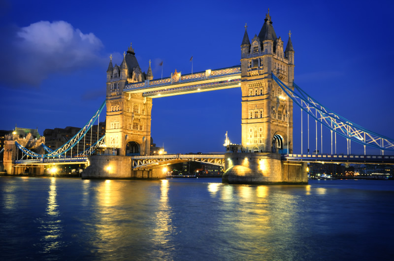

England comprises most of the southern two-thirds of the island of Great Britain, plus offshore islands of which the largest is the Isle of Wight. It is bordered to the north by Scotland and to the west by Wales. Most of England consists of rolling hills, but it is more mountainous in the north.

England
Republic of Ireland
The island of Ireland is situated in the Atlantic Ocean, west of Britain, and to the extreme northwest of Europe. It lies between latitude 51.5 and 55.5 degrees North, and longitude 5.5 and 10.5 degrees West. The population is about 5,500.000. The capital of Ireland is Dublin on the east coast.

France
Most people associate French culture with Paris, which is a center of fashion, cuisine, art and architecture, but life outside of the City of Lights is very different and varies by region. France doesn't just have different cultures; the word "culture" actually comes from France.